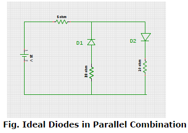
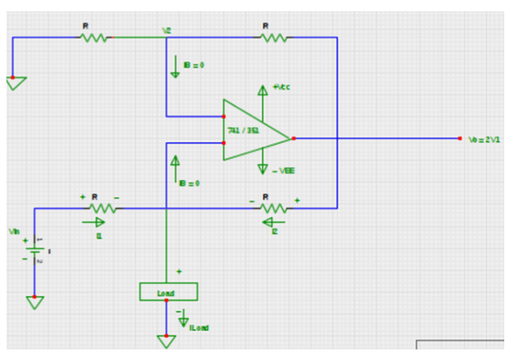

This is a self-adaptive intelligent test. This test has 60 questions and will take approximately 59 minutes to complete. You will see one question at a time. All questions are compulsory and cannot be skipped. You will only get one attempt per question, and once answered, you cannot return to it.
Please note that this examination does not constitute an offer of employment by any participating organization. Your admission to this examination is strictly provisional. Ensure that you meet the eligibility criteria before proceeding.
While the assessment is ongoing,test platform monitors every activity, including your browsing movements, time taken per question, and IP address. If you move away from the browser tab, your assessment will end, and your score will be calculated based on the questions attempted up to that point. You will be visually monitored via webcam, and random photos will be taken to prevent fraud. You are solely responsible for any malpractice.
Recommended browsers for the web interface are Chrome, Mozilla Firefox, and Microsoft Edge on Windows or other operating systems, and Safari on iOS. For mobile, a latest Chrome browser is compatible with all OS like Android, Windows, and iOS. Internet Explorer is not recommended.
In case of internet breakdown, take a screenshot with a timestamp and send it to XYZ@mindagroup.com.
If a linear uniform array consists of 9 isotropic elements separated by λ/4, what would be the directivity of a broadside array in dB?
The information rate R for a given average information H = 2.0 for an analog signal band limited to B Hz is:
What does the below-stated OR Law imply, while performing OR operation of an input with '1'?
Which gates are sequentially cascaded in an AOI (AND-OR-INVERT) configuration?
Which reason is responsible for selecting PIC based on Harvard architecture instead of Von-Neumann architecture?
The output of a sequential circuit is regarded as a function of time sequence of __________.
Which among the following is/are taken into account for post-layout simulation?
Which property of delta function indicates the equality between the area under the product of function with shifted impulse and the value of function located at unit impulse instant?
The circular convolution of two sequences in the time domain is equivalent to:
A 100MHz carrier is frequency modulated by 10 KHz wave. For a frequency deviation of 50 KHz, calculate the modulation index of the FM signal.
What is the value of base current if the common base circuit configuration offers an emitter current of 3 mA, collector current of 1.5 mA along with the reverse saturation current is 11 mA?
If the value of resonant frequency is 50 kHz in a series RLC circuit along with the bandwidth of about 1 kHz, then what would be the value of quality factor?
The output of sequential circuit is regarded as a function of time sequence of __________.
Which region of drain characteristic displays linearity with the direct variation in current corresponding to voltage especially for lesser values of drain-to-source voltage (VDS) by enabling the JFET to act as an ordinary resistor?
What is/are the major role/s of Data Link Layer (DLL) in an OSI model?
Which among the below mentioned assertions is/are correct?
Which among the below mentioned communication assets specifies an agreement of a common language used by the two computers for the purpose of exchanging messages?
Match the following FET behavior with respective Drain Characteristic Regions:
Which among the following operations is/are not involved /associated with the computation process of linear convolution?
In synthesis flow, the flattening process generates a flat signal representation of _____levels.
Assuming no ISI, the maximum possible bandwidth of a multimode graded index fiber with 5 MHz, shows the total pulse broadening of 0.1s for the distance of about 12km. What would be the value of bandwidth length product?
Which conceptual notion introduced by Maxwell, indicates the generation of magnetic field in an empty free space?
Which type of branching instructions of thumb possesses 11-bit address & is generally applicable for slightly longer jumps in order to implement the instructions like GOTO of high level languages?
According to transfer characteristics of PLL, the phase error between VCO output & incoming signal must be maintained between _______ in order to maintain a lock.
Consider that the pole is located at origin and its Laplace representation is 1/s. What would be the nature of pole response?
In SPI bus, which signal line carries data from master to slave device & hence regarded as Slave Input/Slave Data In (SI/SDI)?
For two vectors to be orthonormal, the vectors are also said to be orthogonal. The reverse of the same:
Which among the following characteristics of Laser light specifies the precise movement of all individual light waves together through time and space?
The Chebyshev filters have:
Which region of drain characteristic displays linearity with the direct variation in current corresponding to voltage especially for lesser values of drain-to-source voltage (VDS) by enabling the JFET to act as an ordinary resistor?
Which mode is produced by a positive swing in gate-to-source voltage by input ac signal with the maximum voltage drop across load resistor in DE-MOSFET amplifier circuit?
The method used for screening of products along with the design evaluation in order to catch early-term latent defects is renowned as Environmental Stress Screening (ESS) or __________
What will be the value of current in the following circuit consisting of two oppositely connected ideal diodes in parallel?
The digital modulation technique in which the step size is varied according to the variation in the slope of the input is called:
An AM transmitter has an antenna current changing from 5 A unmodulated to 5.8 A. What is the percentage of modulation?
The advantage of using the cascade form of realization is:
Which among the following assertions represents a necessary condition for the existence of Fourier Transform of discrete time signal (DTFT)?
For a Gaussian channel of 1 MHz bandwidth with the signal power to noise spectral density ratio of about 104 Hz, what would be the maximum information rate?
Which primary constant of transmission line is exhibits its dependency of value on the cross-sectional area of conductors?
If a port is declared as buffer, then which problem is generated in hierarchical design due to mapping with port of buffer mode of other entities only?
Which category of microprocessor instructions detect the status conditions in registers and accordingly exhibit the variations in program sequence on the basis of detected results?
Determine the values of load current and output voltage respectively for the below schematic of voltage to current converter with grounded load by assuming that the op-amp is nulled at the inception.
The digital modulation technique in which the step size is varied according to the variation in the slope of the input is called:
Which phenomenon occurs due to an increase in the channel bandwidth during the transmission of narrow pulses in order to avoid any intervention of signal distortion?
Which parameter property defines the predictable nature of input and output relationship for maximum duration of transducer in terms of reliable operation?
Which coding terminology deals with the inverse operation of assigned words of second language corresponding to the words in the first language?
Match the following STKY multiplier (MAC) flag notations with their meanings in ADSP 21 xx family architecture.
Which value of disc capacitors is preferred or recommended especially when the quartz crystal is connected externally in an oscillator circuit of 8051?
Consider the assertions related to decoding process of cyclic code. Which among the following is a correct sequence of steps necessary for the correction of errors?
The ratio of maximum peak frequency deviation and the maximum modulating signal frequency is termed as:
In DSP processors, which among the following maintains the track of addresses of input data as well as the coefficients stored in data and program memories?
Which among the following parameters is usually only specified in dual and quad level Op-amps which is precisely known as amplifier to amplifier coupling?
What is the value of anode current of SCR comprising two-transistor analogy with the gate current of 40 mA if the gain of PNP & NPN transistors are 0.3 & 0.4 respectively?
Calculate the Nyquist rate for sampling when a continuous time signal is given by x(t) = 5 cos 100πt +10 cos 200πt - 15 cos 300πt
Which performance parameter of a regulator is defined as the change in regulated load voltage due to variation in line voltage in a specified range at a constant load current?
The value of dBm in power measurement is estimated by assuming the reference, which is equal to:
Which type of fiber-optic coupler causes the distribution of an optical power from more than two input ports among the several output ports?
In SM chart for UART transmitter, which state/s indicate/s the waiting of sequential machine for the rising edge of bit clock and the consequent clearing of low order bit of TSR in order to transmit logic '0' for one bit time?
If a port is declared as buffer, then which problem is generated in hierarchical design due to mapping with port of buffer mode of other entities only?
Which category of microprocessor instructions detect the status conditions in registers and exhibit variations in program sequence based on the detected results?
Congratulations! You've successfully completed the first section of the test. Please prepare for the next section: Psychometric Test. Head back to the homepage to start the next part of your assessment. Best of luck!